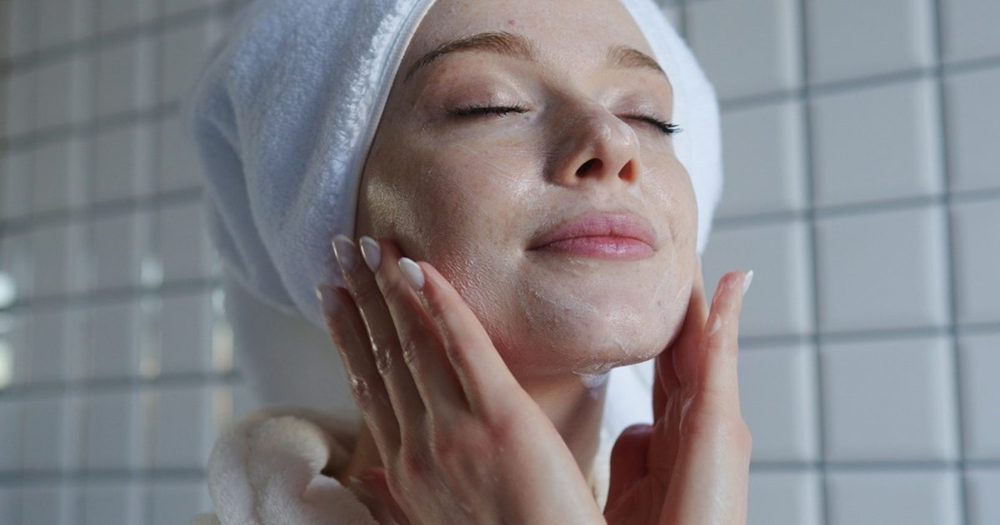

SEPPIC представляет Sepilife NEOS, гибридный полимер на основе сквалана
Сеппик расширяет свою линейку Sepilife, ориентированную на чистую красоту, с помощью Sepilife NEOS, запатентованного гибридного полимера, который сочетает в себе свежее сенсорное ощущение с утолщением и стабилизацией характеристик.
Это также позволяет составить рецептуру для холодного процесса.
SEPPIC расширяет свою линейку Sepilife с помощью Sepilife NEOS, запатентованного жидкого полимера, включающего натуральный сквалан.
Специалист по косметическим ингредиентам стремится удовлетворить растущий спрос на составы, сочетающие C